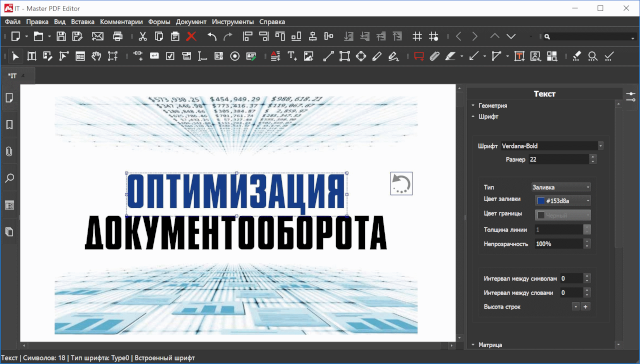

Для редактирования PDF под Linux рекомендуют использовать программу Master PDF Editor (Free Edition). Бесплатная версия бессрочна, и ее базового функционала хваете для простых действий с PDF. согласно документации, бесплатная версия позволяет читать, заполняnm PDF формы, комментировать и печатать PDF документы.
Выглядит данная программа так:

Как видно, имеется русскоязычный интерфейс.
Отдельный вопрос - позволяет ли бесплатная версия работать со страницами документов - добавлять, удалять, поворачивать, менять размер и разрешение.